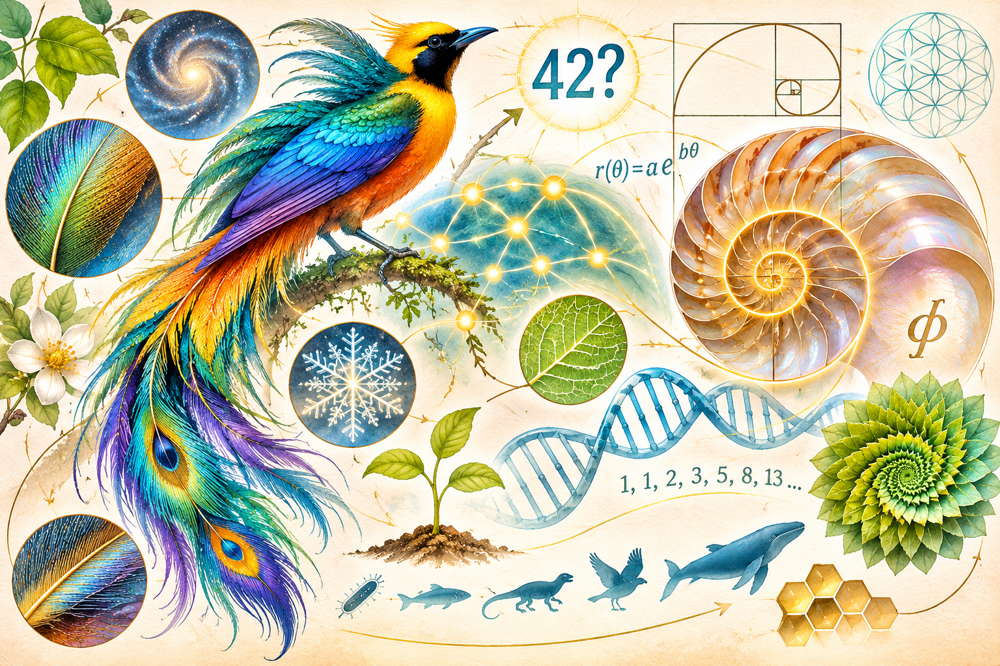

abstraction
nounMeaningA way to describe general relationships without listing every detail
ExampleA spiral equation describes a family of shapes
Why learn itIt helps separate a general rule from one example
Dictionary index ↑(Feathers, Fibonacci, Transformers, and the Question of 42)
Does nature have a deeper language of construction? Are feathers, shells and living forms expressions of mathematical relationships that we have yet to understand fully?
Douglas Adams supplied the answer. Here we are still looking for the question.

This illustrated essay accompanies Christopher Patrick Cotton’s proposal The Undiscovered Language of Life: Beyond Darwin — Biological Intelligence, Genetic Language, and the Possibility of a Natural Transformer. Its imaginative comparisons are invitations to research. Established biological mechanisms and speculative ideas are distinguished throughout.
Douglas Adams gave us a wonderfully inconvenient answer to life, the universe, and everything: 42. The difficulty was discovering the question. In biology we have millions of astonishing answers: feathers, eyes, shells, flowers, and bacteria. What is the deeper question that links the processes constructing them? This is a playful invitation to investigate, not an announcement that a hidden biological intelligence has been found.
A bird feather is lightweight, resilient, and intricate. Its branching barbs and barbules grow through regulated cellular processes. A spectacular bird of paradise might look like nature showing off, but colour, structure, signalling, development, and selection all have real biological explanations. Could a common mathematical language also help us describe how such complex designs are constructed?
A shell can approximate a logarithmic spiral as it grows. This does not mean the mollusc solves equations, and a logarithmic spiral is not automatically a Fibonacci spiral. The fascinating question is how local growth rules generate globally elegant geometry. Nature can implement mathematical relationships without writing the formula on a blackboard.
DNA uses four nucleotide bases, but biological activity also depends on regulatory sequences, RNA, proteins, chemical conditions, spatial organisation, and cellular history. Our proposed analogy calls molecular elements words, coordinated pathways sentences, and context-sensitive regulation grammar. These are metaphors for exploring a testable mathematical model, not a newly decoded language.
An artificial transformer computes context-dependent influence among information elements. In biology, molecular binding, concentrations, signalling, and feedback already change which interactions matter. Might there be a general associative rule behind these different processes? A similar function does not imply an identical architecture.
Life spreads, diversifies, adapts, and persists where conditions permit, but it is neither literally unstoppable nor guaranteed to progress. Extinction is also part of its history. The wonder is that local chemistry, development, ecological interactions, and inherited variation can collectively produce such astonishing diversity. The phrase unstoppable life force is our poetic invitation to look closer.
Natural selection explains changes in inherited variation across generations. Developmental biology investigates how organisms are built. The proposed Contextual Biological Association Hypothesis asks whether a deeper, measurable mathematical account of biological construction and context-dependent memory could improve predictions beyond existing models. It must compete with those models in experiments.
Expose genetically similar cells to different sequences of stimuli, return them to carefully matched conditions, and compare responses to a common challenge. Test whether a model with context-sensitive, history-dependent associations predicts the outcomes better than established biochemical models. Evidence, rather than the beauty of the analogy, must decide.
Three printable models for discussion, each describing a different level of the question.
Discuss the questions before opening each suggested response.
It is built by coordinated cellular growth and physical constraints
A simple growth process can produce a mathematical shape without conscious calculation
The genetic code is established science while the proposed deeper language is a hypothesis
It mathematically weights the relevance of different information elements
It must make predictions that can be compared against established biological models
It encourages us to ask whether we have framed the right scientific question
An alphabetically organised vocabulary of biology, mathematics, and scientific inquiry, with meanings, examples, and reasons to learn each term.
MeaningA way to describe general relationships without listing every detail
ExampleA spiral equation describes a family of shapes
Why learn itIt helps separate a general rule from one example
Dictionary index ↑MeaningA connection between elements or events
ExampleA signal can be associated with a later response
Why learn itIt helps describe relationships that can be tested
Dictionary index ↑MeaningIn artificial intelligence, a method for weighting relevant information
ExampleA transformer assigns different influences to tokens
Why learn itIt distinguishes a mathematical function from awareness
Dictionary index ↑MeaningProcesses that control when and how biological activities occur
ExampleCells regulate gene expression
Why learn itIt explains how identical DNA can yield different activity
Dictionary index ↑MeaningThe surrounding conditions that affect meaning or function
ExampleA gene acts within a cellular context
Why learn itIt prevents treating a component in isolation
Dictionary index ↑MeaningChanges in inherited characteristics across generations involving selection and other processes
ExampleSelection acts on inherited variation
Why learn itIt separates evolutionary change from individual development
Dictionary index ↑MeaningThe molecule that stores hereditary sequence information
ExampleDNA contains nucleotide sequences
Why learn itIt is central to understanding inheritance
Dictionary index ↑MeaningA process in which an outcome influences a later process
ExampleChemical feedback can stabilize a pathway
Why learn itIt helps explain self-regulation
Dictionary index ↑MeaningA number sequence where each new term is the sum of the previous two
ExampleOne one two three five eight
Why learn itIt avoids assuming every natural spiral is Fibonacci
Dictionary index ↑MeaningInteracting components that influence gene activity
ExampleRegulatory networks help coordinate development
Why learn itIt links genes with whole-system behaviour
Dictionary index ↑MeaningA proposed explanation that can be investigated
ExampleThe natural attention idea is a hypothesis
Why learn itIt reminds readers that proposals are not proof
Dictionary index ↑MeaningDrawing a conclusion from available information
ExampleA model infers a possible outcome
Why learn itIt distinguishes prediction from certainty
Dictionary index ↑MeaningA spiral whose distance from the centre changes exponentially with angle
ExampleSome shells approximate logarithmic spirals
Why learn itIt connects observable form with a mathematical model
Dictionary index ↑MeaningThe biological process by which an organism develops its shape
ExampleMorphogenesis helps form feathers and shells
Why learn itIt names the construction process under discussion
Dictionary index ↑MeaningDifferential reproduction of inherited variants
ExampleA trait may spread if it improves reproductive success
Why learn itIt identifies a core evolutionary mechanism
Dictionary index ↑MeaningA speculative description of information organised through abstract representations
ExampleThe paper asks whether biology has deeper symbolic organisation
Why learn itIt helps distinguish metaphor from established discovery
Dictionary index ↑MeaningAn artificial neural network architecture using attention mechanisms
ExampleLanguage models can use transformers
Why learn itIt names the architecture used for comparison
Dictionary index ↑MeaningDifferences among organisms or biological outcomes
ExampleVariation provides material for evolution
Why learn itIt connects construction with evolutionary diversity
Dictionary index ↑No matching terms
Background resources for checking the established science independently.
External resources provide background, not evidence that the proposed biological transformer exists.